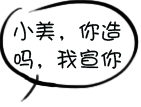
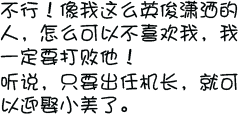
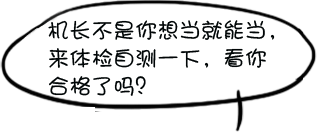
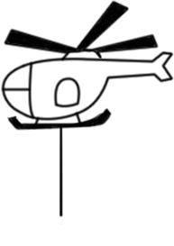
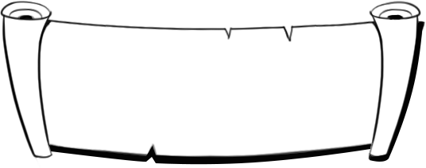

Q1:你的身上无纹身和刺字吗？
A.有纹身，只怪当初太冲动！
B.身体发肤受之父母，没有纹身和刺字！
Q2:是否不晕车、晕船？
A.从来不晕
B.偶尔晕，欧多茄？
Q3:无骨与关节疾病或畸形；无“O”型或“X”型腿？
A.完全没有，都是正常完美的哦
B.啊哦，我不合格
Q4:无口吃，口齿清楚、发音准确
A.我就是伶牙俐齿的主
B.不合格，我只能转行了
Q5:任何一眼的裸眼视力高于C字表0.3（可参考E字表的4.9）；无色盲、色弱、斜视
A.视力杠杠的，这么多年的眼保健操没白做
B.不达标，我还是开开汽车吧
Q6:无较重的砂眼或倒睫
A.没有砂眼和倒睫
B.哎，我还是安静的当乘客吧
Q7:无久治不愈的皮肤病，如头癣、湿疹、牛皮癣、慢性荨麻疹等；
A.没有任何皮肤病，都是健康哒
B.呜呜呜，不达标
Q8:无肾炎或血尿，蛋白尿；无慢性肠胃道疾病；
A.身体棒棒哒，完全达标
B.我还需要多注意身体
Q9:无肺结核；
A.合格，没有肺结核
B.oh，no！我不可以当机长了！
Q10:无肝炎或肝脾肿大，无HbsAg阳性；
A.无，很健康
B.不合格，默默路过
Q11:无传染病史、精神病家族史、癫痫病史；
A.从来没有听说过有这些家族病史
B.当机长的梦想又破灭了
Q12:无颜面五官明显不对称；
A.颜值这么高，当然没有明显不对称啦
B.不合格，可以整容吗
Q13:无耳朵流脓、听力差、经常耳鸣症状；
A.耳聪目明，没有这些症状
B.呵呵哒，我还是不当机长了
Slide 6
Slide 7
Slide 8
Slide 9
Slide 10